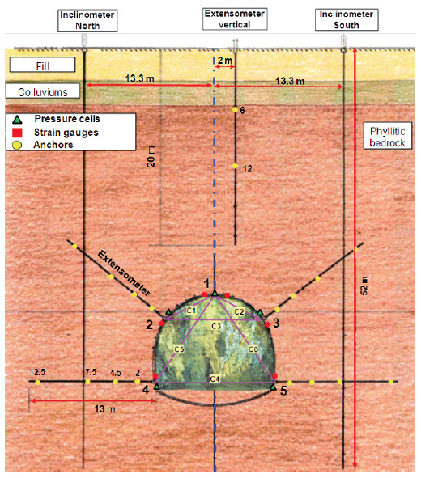
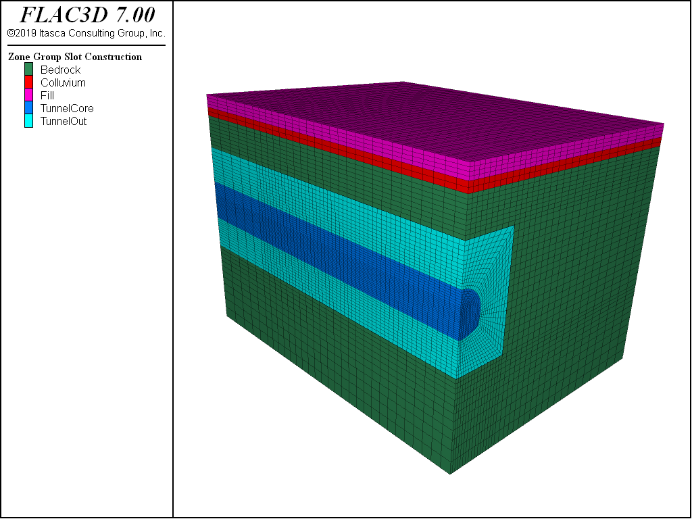
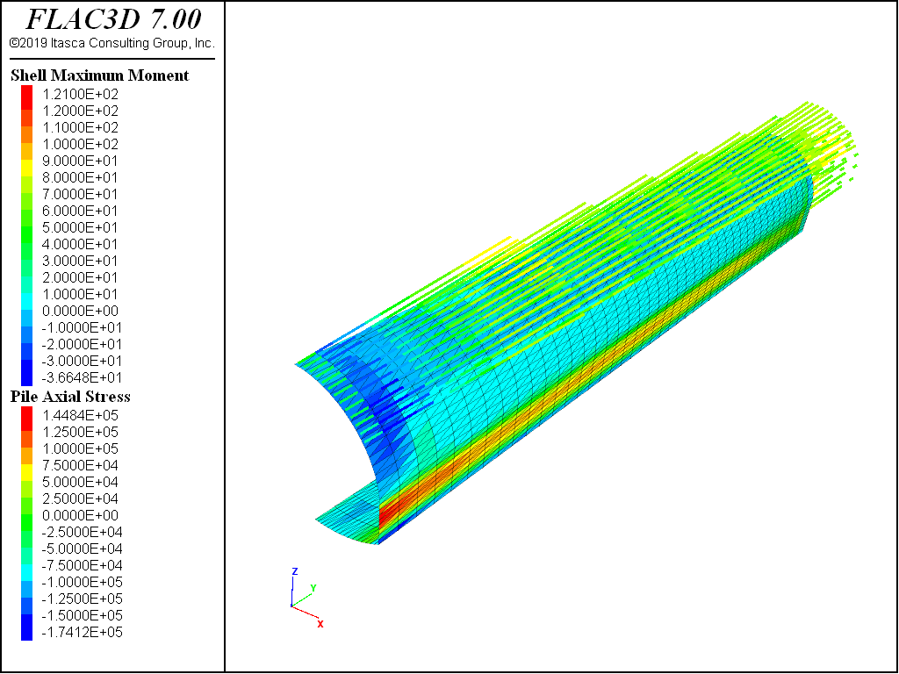
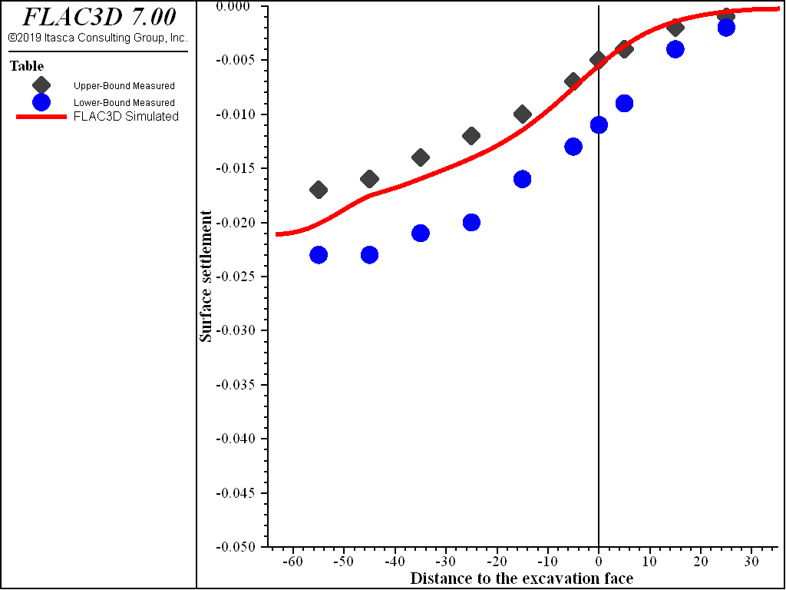
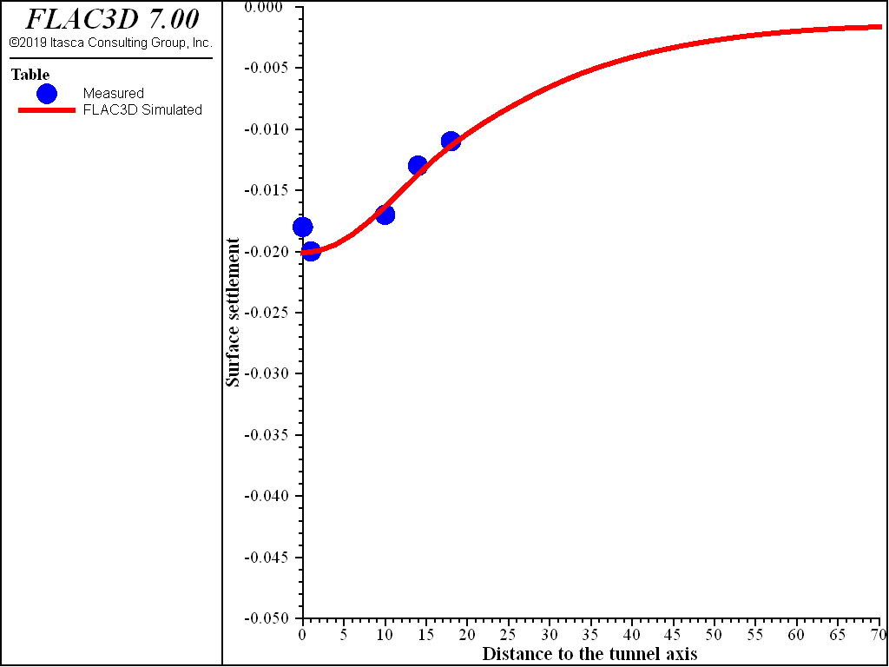
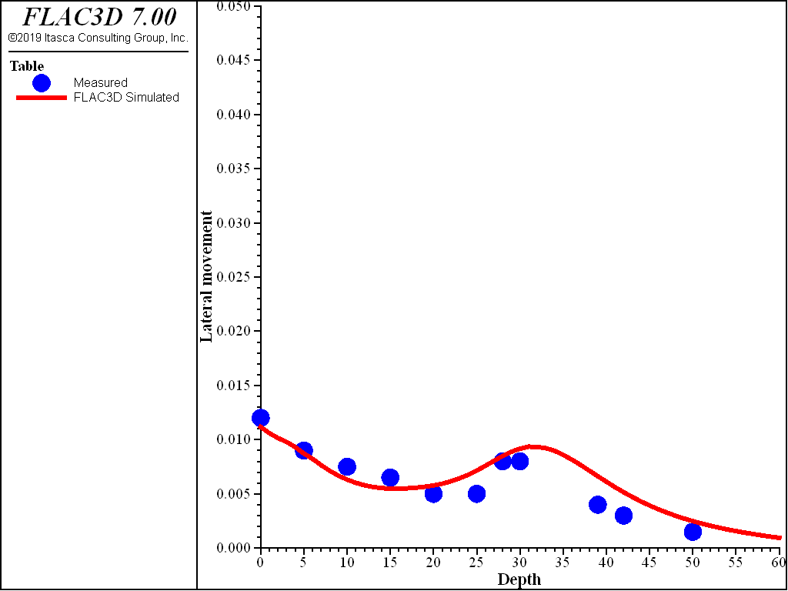

加筋隧道开挖
问题描述
注意
本示例的项目文件可在 FLAC3D 中查看/运行。[1] 该项目的主数据文件见本示例末尾（main data file）。
全断面开挖配合地层加固已成为在不同土/岩条件下修建大型隧道的常用技术。全断面开挖在物流和生产方面具有许多优势，但在设计阶段评估加固与支护的性能/有效性仍是一项困难的任务。掌子面本身对空腔起临时支护作用，加固体所提供的约束水平成为稳定性和沉降评价的重要变量。观测法是设计中的一个关键环节，因为它可以实时收集数据并优化/调整开挖与支护系统。在本示例中，隧道施工期间安装了一个监测断面，为反分析提供了高质量数据。所有关于地质和几何的原始数据均取自 Janin 等（2012，2015）使用有限元平台撰写的论文。Cheng 和 Lucarelli（2016）使用 FLAC3D 中开发的塑性硬化模型（Plastic-Hardening model） 重现了本示例 [2]。
钻孔勘察表明地层基本水平，基岩蚀变程度较高。图 1（Figure 1） 显示了局部地层以及监测断面中安装的仪器。平均土体性质汇总于表 1（Table 1）。表中未列出的土体参数均为默认值。
| 参数 | 单位 | 填充 | 崩积土 | 基岩 |
|---|---|---|---|---|
| 深度 | m | 0.0-3.5 | 3.5-5.9 | > 5.9 |
| 重度（\(\rho\)） | kN/m3 | 19.0 | 20.8 | 24.2 |
| (\(E^{ref}_{50}\)) | MPa | 1.6 | 40 | 240 |
| (\(E^{ref}_{oed}\)) | MPa | 1.6 | 40 | 240 |
| (\(E^{ur}_{50}\)) | MPa | 4.8 | 120 | 720 |
| 压力参考值（\(p^{ref}\)） | kPa | 100 | 100 | 100 |
| 指数（\(m\)） | 0.5 | 0.5 | 0.5 | |
| 摩擦角（\(\phi\)） | 度 | 20 | 30 | 25 |
| 剪胀角（\(\psi\)） | 度 | 0 | 0 | 0 |
| 黏聚力（\(C\)） | kPa | 2 | 10 | 40 |
| 应力比系数（\(K_0\)） | 0.5 | 0.5 | 1.0 |
监测仪器包括隧道两侧的两个测斜仪、隧道轴线上的一个竖向伸长计以及三个目标棱镜。此外，还从隧道内部安装了四个径向伸长计、钢拱架上的六个振弦式应变计、五个压力盒以及收敛标点。该隧道采用所谓的“ADECO-RS”法（Lunardi 2008）开挖。该方法强调控制掌子面前方核心区地层的变形响应对隧道稳定性和地表沉降的重要性。

图 1：地质剖面和仪器（据 Janin 等 2015）。
开挖每步进尺 1.5 m，每步开挖后安装 HEB 180 喷射混凝土。在掌子面推进约 9 个开挖步后，使用 HEB 220 喷射混凝土设置隧道仰拱。采用线弹性行为的壳单元模拟隧道边墙、掌子面和仰拱处的喷射混凝土。隧道边墙、掌子面和仰拱的性质汇总于表 2（Table 2）。
| 类型 | 说明 | 杨氏模量（GPa） | 厚度（m） |
|---|---|---|---|
| 隧道边墙 | HEB 180 | 13.5 | 0.25 |
| 隧道仰拱 | HEB 220 | 14.0 | 0.30 |
| 隧道掌子面 | 15 cm 喷射混凝土 | 10.0 | 0.15 |
安装了管棚（超前支护管）和掌子面水平（玻璃纤维）锚杆。每 9 m 以 6 度的恒定倾角重新打设自钻式管棚预支护管。掌子面锚杆的安装长度恒为 18 m。锚杆性质列于 表 3（Table 3）。
| 超前支护钢锚杆 | 玻璃纤维锚杆 | |
|---|---|---|
| 杨氏模量（GPa） | 210 | 40 |
| 横截面积（m2） | 4.88×10-4 | 8.0×10-4 |
| 惯性矩（m4） | 3.27×10-8 | ~0 |
| 土/锚杆界面抗力（kN/m） | 135 | 135 |
建模流程
已建立三维模型，使用 FLAC3D 分析隧道开挖过程。模型利用了问题的对称性，尺寸为 75 m（半宽）× 70 m（深度）。开挖横截面积约为 100 m2，是使用 FLAC3D 内置挤出工具生成的，该工具可生成二维网格再将其挤出为三维网格。模型在横向方向延伸 100 m，以减小边界效应。隧道拱顶深度约为 25 m。网格已在关注区域周围加密（使用 加密网格单元（zone densify） 命令）。图 2（Figure 2） 显示了模型的几何。


图 2：模型网格。
通过暂时将土体设为 Mohr-Coulomb 模型并使用 模型弹性求解命令（model solve elastic） only 命令获得原位竖向应力。随后使用 FISH 函数和 \(K_0\) 系数重置原位水平应力。在得到符合实际的原位应力后，将土体模型改为塑性硬化模型，其性质列于表 1（Table 1）。
开挖以 1.5 m 为一步进行。每一步将开挖范围内的网格单元置空，同时将掌子面处的结构单元置空。掌子面加固（玻璃纤维单元）和超前支护采用嵌入式桩单元模拟，并强制其长度为 18 m。每 9 m 重新打设掌子面加固和顶部超前支护。
掌子面加固和超前支护的布置本可以先用 CAD 程序或几何逻辑创建一次，然后随隧道开挖以偏移方式创建。然而在本例中，我们选择使用 FISH 函数 生成正面锚杆（GenFrontBolt） 和 生成超前支护（GenForepole）。
达到平衡后，激活由壳单元模拟的衬砌以支护自由跨度。图 3（Figure 3） 显示了锚杆和支护。


图 3：管棚超前支护、掌子面玻璃纤维锚杆以及隧道表面周围的支护。
整个过程通过 FISH 函数管理，并且可以方便地参数化，以便快速检验不同的假设。
主要结果
位移方面的主要结果如图 4（Figure 4） 至图 6（Figure 6） 所示。图 4（Figure 4） 给出了位于隧道轴线正上方的一条地表测线的模拟纵向沉降与至隧道掌子面距离的关系。从掌子面前方约 30 m 处开始出现明显沉降，随后沉降加速并最终达到约 0.20~0.25 m，处于实测数据的上下界之间。图 5（Figure 5） 给出了位于 \(y\) = 8 m 处、垂直于隧道轴线的一条地表测线的模拟横向沉降与至隧道轴线水平距离的关系，其结果也与实测数据吻合良好。测斜仪位置（距隧道对称面 13.3 m）处的模拟水平位移（图 6（Figure 6））成功再现了实测的隧道高程处（深度 25 至 35）的局部“鼓出”以及浅层（深度 0 至 10）向隧道方向的明显倾斜。总之，结果与实测数据吻合程度可接受，模型能够反映现场观察到的主要特征。


图 4：沿隧道轴线的地表竖向位移（点为实测数据的上下界，实线为模拟结果）。


图 5：横向方向的地表竖向位移（点为实测数据，实线为模拟结果）。


图 6：测斜仪位置处的水平位移（点为实测数据，实线为模拟结果）。
参考文献
Cheng, Z., and A. Lucarelli. “Plastic Hardening Model II: Calibration and Validation,” in Applied Numerical Modeling in Geomechanics — 2016 (Proceedings, 4th Itasca Symposium on Applied Numerical Modeling, Lima, March 2016), pp. 393–402, P. Gómez, C. Detournay, R. Hart, and M. Nelson, Eds. Minneapolis: Itasca Consulting Group, Inc. (2016).
Janin, J.P., D. Dias, F. Emeriault, R. Kastner, H. Le Bissonnais, and A. Guilloux. “Numerical back-analysis of the southern Toulon tunnel measurements: A comparison of 3D and 2D approaches”, in Engineering Geology, Issue 195, 42-53. Spring (2015).
Janin, J.P., D. Dias, R. Kastner, F. Emeriault, A. Guilloux, and H. Lebissonnais. “South Toulon tunnel: Analysis of an instrumented section”, In Viggiani, Ed., Geotechnical Aspects of Underground Construction in Soft Ground, London: Taylor & Francis Group. (2012).
Lunardi, P. “Design and construction of tunnel - Analysis of controlled deformation in rocks and soils (ADECO-RS)”, 577, Springer-Verlag, Berlin, Heidelberg. (2008).
数据文件
ReinforcedTunnelExcavation.dat
model new
model large-strain off
fish automatic-create off
; 网格生成
program call 'geometry' suppress ; 使用 Extruder 创建，
; 由状态面板导出。
zone generate from-extruder
zone face skin ; 命名模型边界
zone group 'Bedrock' slot 'Material' ...
range group 'TunnelCore' or 'TunnelOut' or 'Bedrock'
zone densify global seg 1,2,1 range position-y 0 75 group 'TunnelCore'
zone densify global seg 1,2,1 range position-y 0 75 group 'TunnelOut'
zone attach by-face ; 连接加密区的边界
; 分配本构模型和属性
zone cmodel assign mohr-coulomb
zone prop density 1.90 young 4.8e3 poisson 0.2 friction 20 cohesion 2 ...
range group 'Fill'
zone prop density 2.08 young 1.2e5 poisson 0.2 friction 30 cohesion 10 ...
range group 'Colluvium'
zone prop density 2.42 young 7.2e5 poisson 0.2 friction 25 cohesion 40 ...
range group 'Bedrock'
; 滚轴边界条件
zone face apply velocity-x 0 range group 'East' or 'West'
zone face apply velocity-y 0 range group 'North' or 'South'
zone face apply velocity (0,0,0) range group 'Bottom'
; 初始应力平衡
model gravity 10
zone initialize-stresses ratio 0.5 range group 'Fill
zone initialize-stresses ratio 0.5 range group 'Colluvium'
zone initialize-stresses ratio 1.0 range group 'Bedrock'
model solve elastic convergence 10
model save 'ini-stress'
zone initialize state 0
zone gridpoint initialize disp (0 0 0)
;;; 改为 PH 模型
zone cmodel assign plastic-hardening
zone prop pressure-reference 100 exponent 0.5
zone prop stiffness-50-reference 1.6e3 stiffness-ur-reference 4.8e3 ...
friction 20 cohesion 2 range group 'Fill'
zone prop stiffness-50-reference 4.0e4 stiffness-ur-reference 1.2e5 ...
friction 30 cohesion 10 range group 'Colluvium'
zone prop stiffness-50-reference 2.4e5 stiffness-ur-reference 7.2e5 ...
friction 25 cohesion 40 range group 'Bedrock'
; 初始化有效应力参数
program call 'fishtank' suppress
[iniprin(::zone.list, "plastic-hardening")]
model solve convergence 10
model save 'ph-soil'
; 对切片分组
zone initialize state 0
zone gridpoint initialize disp (0 0 0)
zone mechanical damping combined
struct mechanical damping combined-local
; 激活掌子面锚杆
[GenFrontBolt(0.75, -26.4, 0, 7, 18.0, 1.5, 12)]
[GenFrontBolt(2.25, -27.2, 0, 6, 18.0, 1.5, 12)]
[GenFrontBolt(3.75, -27.9, 0, 5, 18.0, 1.5, 12)]
[GenFrontBolt(5.25, -30.2, 0, 3, 18.0, 1.5, 12)]
; 推进开挖
fish define excavation
loop local is (1, 7)
local yst = (is-1) * 9.0
; 激活伞形超前支护
GenForpole(6.4, 3.0, 0.5, 13, 18.0, yst, 6.0)
; 推进开挖
Advance(1+(is-1)*6,is*6,1.5)
endloop
end
[excavation]
fishtank.dat
; 初始化塑性硬化模型的有效应力参数
fish operator iniprin(z, modelname)
local pp = zone.pp(z)
if zone.model(z) = modelname then
local prin = zone.stress.prin(z)
zone.prop(z,'stress-1-effective') = prin->x + pp
zone.prop(z,'stress-2-effective') = prin->y + pp
zone.prop(z,'stress-3-effective') = prin->z + pp
endif
end
;
; 生成锚杆（使用桩单元）
fish define GenFrontBolt(x1,z1,ystart,nb,len,dz,seg)
loop local ii (1,nb)
local startp = gp.pos(gp.near(x1,ystart,z1-(ii-1)*dz))
command
struct pile create by-ray [startp] (0,1,0) [len] segment [seg] ...
id 1 group 'FiberGlass'
struct pile property density 0.1 young 4.0e7 poisson 0.2 ...
cross-section-area 0.8e-3 moi-y 0.01e-6 moi-z 0.01e-6 ...
moi-polar 0.02e-6 coupling-stiffness-normal 1e8 ...
coupling-cohesion-normal 1e7 ...
coupling-friction-normal 0 ...
coupling-stiffness-shear 1e8 ...
coupling-cohesion-shear 135 ...
coupling-friction-shear 0 ...
perimeter 0.20 range id 1
endcommand
endloop
end
; 生成超前支护
fish define GenForpole(rads,alst,inter,nb,len,ystart,incl)
loop local ii (1,nb)
local svil = rads*(alst*math.degrad) + (ii-1)*inter
local alfa = svil / rads
local inclv = math.cos(alfa) * (incl*math.degrad)
local inclh = math.sin(alfa) * (incl*math.degrad)
local startp = vector(rads*math.sin(alfa),ystart,-31.4+ ...
rads*math.cos(alfa))
local endp = startp + vector(len*inclh,len,len*inclv)
command
struct pile create by-line [startp] [endp] segment 15 ...
id 2 group 'ForePole'
struct pile property density 2.4 young 2.1e8 poisson 0.2 ...
cross-section-area 0.488e-3 moi-y 0.0327e-6 ...
moi-z 0.0327e-6 moi-polar 0.0654e-6 ...
coupling-stiffness-normal 1e8 ...
coupling-cohesion-normal 1e7 ...
coupling-friction-normal 0 ...
coupling-stiffness-shear 1e8 ...
coupling-cohesion-shear 135 ...
coupling-friction-shear 0 ...
perimeter 0.10 range id 2
endcommand
endloop
end
; 推进一个隧道切片
fish define Advance(slini,slend,Dy)
loop local ii (slini,slend)
local tt = ii - 9
local ysl1 = (ii-1) * Dy
local ysl2 = ii * Dy
local ysl3 = ysl1 + 18.0
command
; 开挖
zone cmodel assign null ...
range group 'TunnelCore' position-y [ysl1] [ysl2]
; 删除开挖范围内的锚杆
struct pile delete ...
range group 'FiberGlass' position-y [ysl1] [ysl2]
; 删除隧道掌子面的喷射混凝土
struct shell delete range group 'TunnelFace'
; 激活新的隧道边墙
struct shell create by-zone-face element-type dkt-cst id 1 ...
group 'TunnelWall' range group 'TunnelBoundary' ...
position-y [ysl1] [ysl2] position-z -35 0
struct shell property isotropic (13.5e6,0.2) thick 0.25 ...
density 2.4 range group 'TunnelWall'
; 激活新的隧道掌子面
struct shell create by-zone-face element-type dkt-cst id 1 ...
group 'TunnelFace' ...
range group 'TunnelCore' position-y [ysl2]
struct shell property isotropic (10e6,0.2) thick 0.15 ...
density 2.4 range group 'TunnelFace'
endcommand
; 接长超前锚杆
GenFrontBolt(0.75, -26.4, ysl3, 7, 1.5, 1.5, 1)
GenFrontBolt(2.25, -27.2, ysl3, 6, 1.5, 1.5, 1)
GenFrontBolt(3.75, -27.9, ysl3, 5, 1.5, 1.5, 1)
GenFrontBolt(5.25, -30.2, ysl3, 3, 1.5, 1.5, 1)
; 激活隧道仰拱
if tt >= 1 then
command
struct shell create by-zone-face element-type dkt-cst id 1 ...
group 'TunnelInvert' ...
range group 'TunnelBoundary' ...
position-y [(tt-1)*Dy] [tt*Dy] position-z -70 -35
struct shell property isotropic (14.0e6,0.2) thick 0.30 ...
density 2.4 range group 'TunnelInvert'
endcommand
endif
;
command
; 结构单元边界条件
struct node fix velocity-x rotation-y rotation-z ...
range position-x 0.0 position-z -25.2
struct node fix velocity-x rotation-y rotation-z ...
range position-x 0.0 position-z -36.5
struct node fix velocity-x ...
range position-x 0.0
; 求解
model solve convergence 5
endcommand
endloop
command
model save ['Excav_slice_' + string(slend)]
endcommand
end
尾注
| [1] | 要在 FLAC3D 中查看该项目，请使用程序菜单。
⮡ FLAC |
| [2] | 本示例取自 Cheng 和 Lucarelli（2016），其中使用了更精细的网格。 |
| 这些内容对您有帮助吗？… 版权与免责声明 | FLAC3D © 2019, Itasca | 原文更新于 2020 年 10 月 8 日 |